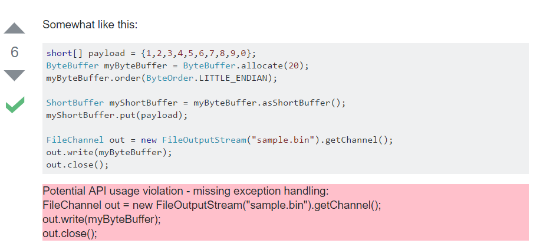
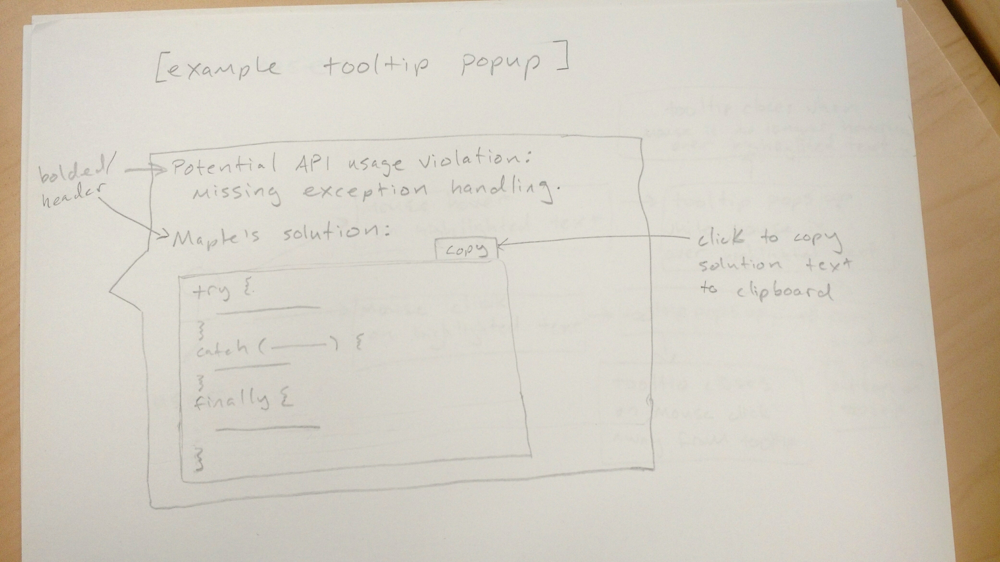

I met Dr. Kim and Tianyi this week, and we discussed the long-term goals of my project this summer. Ideally, I could develop the UI and then we could do some human tests and write that into a paper.
This week I had to create a mockup of the UI for Dr. Kim and Tianyi to give feedback on. I made sketches of how it would augment StackOverflow, the use cases, and what a popup might look like.
At first, I had been considering an augmentation of the site that would appear under the code box in violation, like so:

However, after talking it over with Tianyi, he pointed out that a UI like Codota's code browsing assistant would be cleaner and more sophisticated. I agree, so right now I'm
using Codota as my primary source of inspiration, as well as a few HCI papers Tianyi sent my way. My current tooltip/popup look would be something like this:

The violating code lines would be highlighted when the user loads the page, and hovering over the highlighted text with the mouse would cause the tooltip to appear. Clicking on the highlighted text would make the tooltip stay visible until a mouse click is registered outside of the highlighted text. I also thought a copy-button like Codota's could be a nice feature for users who would want to copy Maple's solution from the tooltip.